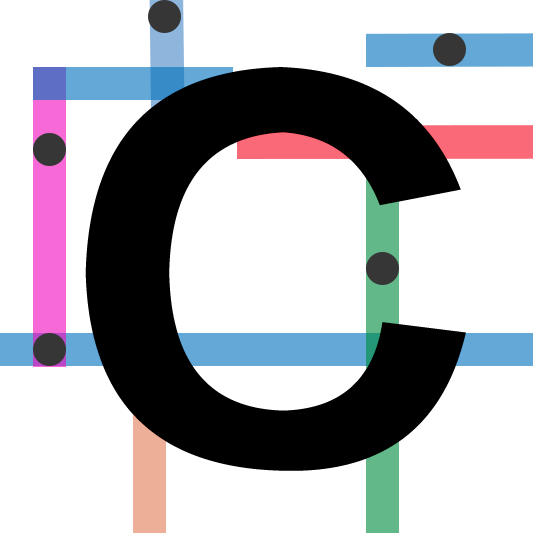
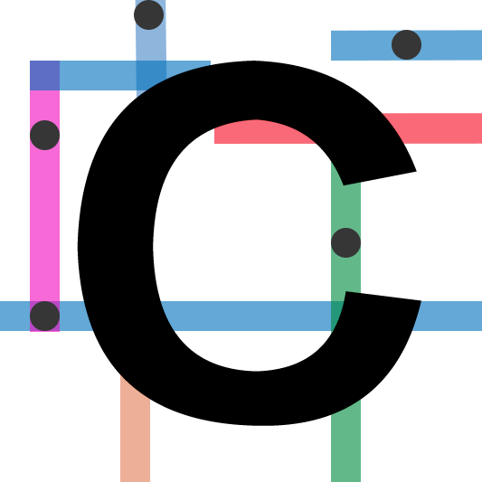

FAVICON
Create a favicon for the Core interaction website. Think about the function of the website along with the navigational and formal elements of its design.
Create a favicon for the Core interaction website. Think about the function of the website along with the navigational and formal elements of its design.
Choose a space nearby to explore. The space may be as small as a closet or as large as a classroom. Make a list of the intended functions of the space. If there are alternative ways to use the space separate from its intended use, list those as well.
Create a typeface using HTML and CSS. Minimal use of imagery is allowed if the image is not the complete letterform. Think about what it means to make a typeface for the screen versus the printed page.
Develop a website that acts as a poem generator. Use the Fry Words as the database of possible words that your poem can be based on. Start by establishing a ruleset that determines how the poem is constructed.
Now that we’ve completed drawing all our letterforms and have brought it off the screen to the printed page, it’s time to bring it back on screen. Your poster asked you to give your typeface a visual, historical, and cultural context. How can an interactive platform highlight aspects of your design that did not previously exist in your poster?